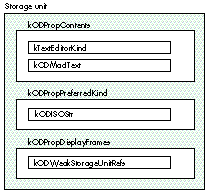
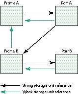
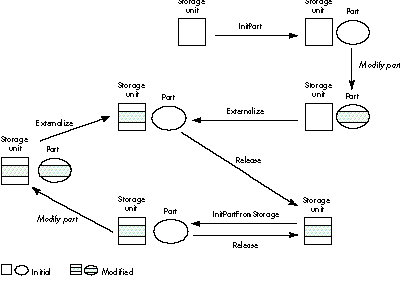

OpenDoc's structured storage model is an innovative departure from the traditional
storage scheme. As you make the move into OpenDoc development, you need to
understand the new storage model and its implications for the way data is stored and
retrieved. This article introduces the new concepts and policies you'll need to know in
order to use OpenDoc storage effectively.
In the traditional Macintosh user model, each application creates and maintains its own
documents, storing each document in a separate file. A file has one creator signature
and one file type, identifying the application it belongs to and the kind of document it
contains. In OpenDoc, by contrast, a document can have multiple parts, created and
maintained by different part editors (called part handlers in earlier versions of
OpenDoc), which are analogous to the standalone applications of the traditional model.
Because all of a document's parts are stored together in the same container (usually
corresponding to a file), there has to be a way for separate part editors to share access
to the same container without interfering with each other.
OpenDoc meets this need by providing a structured model for persistent storage (that
is, for storing data from one session to the next). Each part is given its own storage
unit in which to store and retrieve data. The part can thus operate as a standalone
entity, independent of other parts and their storage. OpenDoc maintains all of the
storage units and notifies each part when to read or write its data.
The same techniques that are used in dealing with persistent storage also apply to the
various forms of data interchange between part editors, such as the Clipboard, drag
and drop, and linking. Because all of these mechanisms use the same data storage
medium (the storage unit), they all work essentially the same way from the part
editor's point of view. For example, a part uses the same API calls to copy data to the
Clipboard that it would use in writing the data to a file container. The same is true for
drag and drop and for linking. Thus, once you learn how to work with OpenDoc storage
units for file storage, you can use the same techniques to implement data interchange
as well.
This article assumes that you're already familiar with basic OpenDoc concepts and
terminology. If you need a quick introduction or refresher, see the article "The
OpenDoc User Experience" in develop Issue 22. You can find additional information on
some of OpenDoc's technical basics in the articles "Building an OpenDoc Part Handler"
in Issue 19 and "Getting Started With OpenDoc Graphics" in Issue 21. Developer
releases of OpenDoc include the definitive documentation, the OpenDoc Programmer's
Guide and OpenDoc Class Reference. Developer releases are available through a number
of different sources, or you can request the latest release at AppleLink OPENDOC or at
opendoc@applelink.apple.com on the Internet. The source code in this article is
excerpted from a sample part included with the developer release.
Because OpenDoc was developed jointly by a consortium of companies including Apple,
IBM, and Novell, its interfaces are designed for cross-platform compatibility, using
IBM's platform-independent Standard Object Model (SOM). OpenDoc method
definitions, including the ones in this article, are commonly written in a
language-neutral Interface Definition Language (IDL). The SOM compiler converts
these into equivalent language-specific declarations for whatever source language you
happen to be using. The method definitions shown in this article, for instance, are
taken from the OpenDoc interface file StorageU.idl. To use these methods in your
program, you must include the corresponding language-specific binding file (such as
StorageU.xh for a C++ program).
The OpenDoc classes responsible for providing storage capabilities are ODContainer,
ODDocument, ODDraft, and ODStorageUnit. Collectively, a set of subclasses derived
from these four is known as a container suite. A containerrepresents the physical
storage medium in which a document is stored, such as a disk file. Different container
suites share the same API, but may use different low-level storage mechanisms and
operate on different physical storage media. For example, the Bento container suite,
which will be shipped with OpenDoc 1.0, supports both file containers and in-memory
containers. A part editor can thus use the same code to store a part's data either to a
file or in memory.
A single container may contain one or more documents, each of which in turn can
include one or more drafts. A part ordinarily works with a draft, rather than directly
with a document or its container. Each draft is a "snapshot" representing the state of
the document at a particular point in its development. Together, the drafts embody the
history of the document over time.
A part may need to interact with its draft for a variety of reasons:
The basic entity of a container suite is the storage unit. Every persistent OpenDoc
object has a storage unit in which to store and retrieve its data. Figure 1 shows a
typical example.

Figure 1. Structure of a storage unit
A storage unit consists of one or more properties, each of which in turn is associated
with one or more values containing the data itself. The storage unit shown in Figure 1,
for instance, has properties named kODPropContents, kODPropPreferredKind, and
kODPropDisplayFrames; the kODPropContents property has values of types
kTextEditorKind and kODMacIText.
Using multiple values allows a property to represent the same data in different forms.
For example, a property holding a drawing may have three values representing the
same data: one as a Macintosh PICT, one as a Windows metafile, and one in TIFF format.
Although OpenDoc cannot enforce the principle, part developers are urged to use
multiple values within a property only for multiple representations of the same data,
not for storing unrelated data items.
The property names and value types shown in Figure 1 represent string constants of
type ODPropertyName and ODValueType, respectively. For cross-platform
extensibility, both of these types are defined as equivalent to an ISO string instead of a
traditional Macintosh OSType: that is, they're 7-bit ASCII null-terminated strings, as
specified by the International Standards Organization (ISO). The string values
themselves are expected to follow a standard naming convention: for instance, the
constants kODPropDisplayFrames and kODWeakStorageUnitRefs stand for the strings
"OpenDoc:Property:DisplayFrames" and "OpenDoc:Type:StorageUnitRefs",
respectively. The OpenDoc interface files StdProps.idl and StdTypes.idl define name
constants for standard properties and value types; any property and type names that
you define for yourself should follow the same naming conventions.
FOCUSING A STORAGE UNIT
The OpenDoc operations for manipulating values don't explicitly identify the value to
operate on. Instead, you have to focus the storage unit on the desired property or value
before invoking the operation. The method for setting the focus is defined in class
ODStorageUnit as follows:
ODStorageUnit Focus(in ODPropertyName propertyName,
in ODPositionCode propertyPosCode,
in ODValueType valueType,
in ODValueIndex valueIndex,
in ODPositionCode valuePosCode);
This allows you to set the storage unit's focus in a variety of ways:
Properties and values are ordered within the storage unit according to the sequence in
which they were added. Values within a property are indexed from 1: that is, the first
value has index 1, the second index 2, and so on. Positions relative to the current focus
are specified with a position code. The same position code can refer to either a
property or a value, depending on the current focus. For instance, if the storage unit is
currently focused on a property, the position code kODPosNextSib designates the next
property; if the current focus is on a value, kODPosNextSib designates the next value.
Another way to set the focus of a storage unit is with a storage unit cursor:
ODStorageUnit FocusWithCursor(in ODStorageUnitCursor cursor);
The cursor identifies a property by name or a value by its property name and its index
or value type. Once created (with method CreateCursor or CreateCursorWithFocus of
class ODStorageUnit), the same cursor can be reused multiple times to refer to
properties or values within the storage unit.
Once you've focused a storage unit, you can create a storage unit view to refer to the
same property or value again later without having to reset the focus:
ODStorageUnitView CreateView();
The view responds to all the same access methods as the storage unit itself, but applies
them to the property or value that had the focus at the time the view was created,
rather than at the time the method is invoked. It does this by automatically resetting
the underlying storage unit to the original focus, then forwarding the method call to
the storage unit for processing.
MANIPULATING VALUE DATA
The operations for manipulating data within a storage value are stream-based, very
much like reading or writing to a sequential file. Each value has a current offset
position that controls where the next operation will take place, similar to the file
mark in the Macintosh file system. In addition to reading and writing data sequentially,
you can also insert or delete data at the current offset position.
Class ODStorageUnit defines the following methods for manipulating value data:
void SetOffset(in ODULong offset); ODULong GetOffset(); void SetValue(in ODByteArray value); ODULong GetValue(in ODULong length, out ODByteArray value); void InsertValue(in ODByteArray value); void DeleteValue(in ODULong length);
The ODByteArray structure is used to pass data to or from a storage unit.
typdef struct {
unsigned long _maximum; /* size of buffer */
unsigned long _length; /* number of bytes of actual data */
octet* _buffer; /* pointer to buffer containing the */
/* data */
} _IDL_SEQUENCE_octet;
typedef _IDL_SEQUENCE_octet ODByteArray;
(Anoctet is simply the SOM term for an 8-bit byte.) Listing 1 shows how to
manipulate one of the values shown in Figure 1.
Listing 1. Adding data to a value
/* Focus the storage unit, using property name and value type. */
storageUnit->Focus(ev, kODPropContents, kODPosUndefined,
kTextEditorKind, 0, kODPosUndefined);
/* Set up the byte array. */
ODByteArray ba;
ba._length = size;
ba._maximum = size;
ba._buffer = buffer;
/* Set the offset. (This step isn't really needed here, since the
Focus operation automatically sets the offset to 0. It's included
for illustrative purposes only.) */
storageUnit->SetOffset(ev, 0);
/* Add the value. */
storageUnit->SetValue(ev, &ba);
STORAGE UNIT REFERENCES
Storage unit references allow one storage unit to refer persistently to another. A part
can use this mechanism to access information stored in a storage unit (which may or
may not belong to it) across multiple sessions. A draft thus consists essentially of a
network of storage units connected to each other with persistent references.
When a storage unit is cloned (copied to a data-interchange container), any other
storage units it references are cloned along with it. Since all storage units in a draft
are interconnected, cloning any one of them may cause the whole draft to be cloned.
Because this may be an expensive and unnecessary operation, OpenDoc provides two
levels of storage unit reference: strong and weak. Only strongly referenced storage
units are copied when the unit that refers to them is cloned.
In Figure 2, frame A refers strongly to part A, which refers strongly to frame B,
which refers strongly to part B. Thus if frame A's storage unit is cloned, all four
storage units will be copied. On the other hand, cloning frame B's storage unit will
copy those for frame B and part B only, since frame B's reference to frame A is weak
rather than strong.

Figure 2. Strong and weak storage unit references
An object can use strong storage unit references to refer to other objects that are
essential to its functioning, such as embedded frames. Weak references are mainly for
informational or secondary purposes: a part might use them, for instance, to refer to
its display frames.
Figure 3 shows the life cycle of a part and its associated storage unit. Because the
part's lifetime may span multiple editing sessions, it must be able to externalize its
internal state (save it to persistent storage) in order to reconstruct itself from one
session to the next. The part's InitPart method, called when the part is first created,
receives a storage unit as a parameter. The Externalize method can then use this
storage unit to save the part's state. Once externalized, the part can be released from
memory and later reconstituted from external storage by a method named
InitPartFromStorage. Unlike InitPart, InitPartFromStorage can be called multiple
times during a part's lifetime, whenever the part needs to be reconstructed from
external storage.

Figure 3. Life cycle of a part
Notice that externalizing a part is not the same as cloning it. Externalizing means
writing the part's data to persistent storage, using a storage unit associated with the
draft in which the part resides; cloning is transferring the part's data to a
data-interchange container such as the Clipboard, using a storage unit associated with
the container. Although the two operations are different, they're both based on the
same ODStorageUnit API and can share much of the same code.
Another related operation is purging, which reclaims memory space by eliminating
unnecessary runtime data structures such as caches. Because such structures can
usually be reconstructed from persistent data, many OpenDoc programmers believe
that a part's Purge method should always begin by externalizing the part's data before
deleting unused or unnecessary memory. While this might sound plausible in
principle, the externalization operation itself requires additional memory -- the very
thing that's in short supply during purging. As a general rule, the Purge method should
avoid invoking externalization unless it's absolutely necessary.
All persistent objects carry a reference count, enabling OpenDoc to identify unused
objects and reclaim the memory they occupy. The Acquire method, which creates a
reference to a specified object, increments the object's reference count; the Release
method destroys a reference and decrements the reference count. When the reference
count goes down to 0, OpenDoc can safely delete the object from memory.
INITIALIZATION
The initialization method InitPart is called only once, to set up a part's initial state. It
should take the following actions:
Listing 2 shows an example. Notice that the SOM compiler, in translating the method
declaration from language-independent IDL into a specific source language, adds two
additional parameters at the beginning of the parameter list: a pointer to the object
executing the method (somSelf) and an environment pointer (ev) used for error
reporting. All of our example method definitions in this article begin with these two
parameters.
Listing 2. Initializing a part
SOM_Scope void
SOMLINK TextEditor__InitPart(SampleCode_TextEditor *somSelf,
Environment *ev,
ODStorageUnit *storageUnit,
ODPart *partWrapper)
{
SampleCode_TextEditorData *somThis =
SampleCode_TextEditorGetData(somSelf);
SOMMethodDebug("TextEditor", "InitPart");
SOM_TRY
// Call the parent class's InitPart method. The parent will in
// turn call its parent, and so on.
parent_InitPart(somSelf, ev, storageUnit, partWrapper);
// Store part wrapper object in an internal field.
_fSelf = partWrapper;
// Set a flag showing that this draft is not read-only.
_fReadOnlyStorage = kODFalse;
// Call common initialization code to set up our initial state.
somSelf->Initialize(ev);
// Set the dirty flag to true.
somSelf->SetDirty(ev);
SOM_CATCH_ALL
// No explicit code needed here: cleanup will be performed by
// the destructor, which is called automatically when an error
// is thrown.
SOM_ENDTRY
}
Parent initialization. It's important for a part's initialization method to call that
of its parent class. The parent's initialization method will in turn call that of its
parent and so on up the inheritance chain, ensuring that all of the part's inherited
properties are properly initialized. Inherited properties set up by ODPart and its
parents, such as ODPersistentObject, include the following:
Part wrapper. Every part is wrapped by another object, called its part
wrapper.Clients of the part object deal with it indirectly, through the part wrapper,
instead of holding a direct pointer to the part object itself. The part wrapper receives
all method invocations and delegates them to the actual part. This insulation of the part
object allows the part editor to be changed at run time without affecting its clients.
The InitPart method should save the part wrapper object in an internal field. Then,
whenever the part needs to pass an object representing itself as a parameter, it should
pass the part wrapper in place of itself.
Draft permissions. A part editor needs to know whether a part is in a read-only
draft. If so, its functionality may be restricted: for example, the part may not allow
the user to change its contents, either through keyboard input or through menu
operations such as Cut and Paste. Also, if the draft is read-only, its Externalize method
need never be called on its parts or any persistent objects. When a part is created for
the first time, its draft is guaranteed to be writable, so it should initialize its
read-only flag to false.
Dirty flag. The purpose of a dirty flag is to let the part's Externalize method know
whether it needs to write out the part's state to external storage. Externalization
(especially to disk) can be a time-consuming and expensive operation; using a dirty
flag can greatly improve performance by avoiding it whenever possible.
When a part is first created, its storage unit is empty. Since the state has not yet been
written out, the part should initialize its dirty flag to true; the flag should also be set
to true whenever the contents of the part are changed. After saving the state and
content data to external storage, the Externalize method should clear the flag to false,
indicating that the state need not be saved again unless the part's contents are changed.
EXTERNALIZATION
A part's Externalize method can be called at any time. Typically, it's called by the draft
when the user chooses to save the document. Since a part has no idea when this may
happen, it should always be ready to externalize itself. The Externalize method should
do the following:
Listing 3 shows an example.
Listing 3. Externalizing a part
SOM_Scope void
SOMLINK TextEditor__Externalize(SampleCode_TextEditor *somSelf,
Environment *ev)
{
SampleCode_TextEditorData *somThis =
SampleCode_TextEditorGetData(somSelf);
SOMMethodDebug("TextEditor", "Externalize");
SOM_CATCH return;
// Ask parent classes to externalize themselves.
parent_Externalize(somSelf, ev);
// Check dirty flag.
if (_fDirty) {
// Get storage unit.
ODStorageUnit *storageUnit = somSelf->GetStorageUnit(ev);
// Verify that the storage unit has the appropriate properties;
// if not, add them.
somSelf->CheckAndAddProperties(ev, storageUnit);
// Validate storage unit's contents and clean up if necessary.
somSelf->CleanseContentProperty(ev, storageUnit);
// Write out state information and contents.
somSelf->ExternalizeStateInfo(ev, storageUnit, 0, kODNULL);
somSelf->ExternalizeContent(ev, storageUnit, kODNULL);
// Clear dirty flag.
_fDirty = kODFalse;
}
}
The contents of a part must be written out to a special content property named
kODPropContents. Like other properties, the content property can contain multiple
values representing the same data in different forms. A value type used for content data
is referred to as a part kind. To facilitate data interchange, part editors are encouraged
to include one or more standard part kinds in their content property, much the way
traditional Macintosh applications use common data formats like 'TEXT' or 'PICT' when
writing to the Clipboard.
Each value in the content property should be a complete representation of the content
data. A value may contain references to other storage units, but cannot depend on other
values in the content property or on other properties in the part's storage unit. Even
if every other property and value were deleted from the storage unit, the part editor
should still be able to reconstruct the part using just that one content value.
The ordering of values within the content property is completely determined by the
part editor. An important principle, however, is that values that represent the
underlying contents with greater fidelity should precede those of lesser fidelity:
formatted text, for instance, should precede plain (unformatted) text. The first value
should be the one that represents the content most faithfully.
When a part editor reconstructs a part from an external storage unit,
there's a chance that the storage unit may have originally been written by
some other part editor. As a result, the content property may contain part
kinds that the current part editor doesn't support, or the values may appear in
the wrong fidelity order. In this case, the part's Externalize method should
remove all existing values from the content property so that it can write out
its own content data in proper fidelity order.*
A standard property named kODPropPreferredKind identifies the part kind that the
user chooses to represent the data. If this property already exists, the part editor
shouldn't tamper with it; if it doesn't exist, the part editor may create it and give it a
value of type kODISOStr containing the name of the highest-fidelity part kind. When
writing out the content data, the part editor should be sure to include a value in the
format specified by this property.
RECONSTRUCTION
The InitPartFromStorage method is called whenever a part object needs to be
reconstructed from external storage. This method should do the following:
Notice that these are essentially the same steps we listed earlier for the InitPart
method, except that the contents of the part's runtime data structures are read in from
the storage unit instead of being initialized to standard values, and that the dirty flag is
cleared to false instead of true to show that the part's contents agree with those in the
external storage unit. Listing 4 shows an example of an InitPartFromStorage method.
Listing 4. Reconstructing a part
SOM_Scope void
SOMLINK TextEditor__InitPartFromStorage
(SampleCode_TextEditor *somSelf,
Environment *ev,
ODStorageUnit *storageUnit,
ODPart *partWrapper)
{
SampleCode_TextEditorData *somThis =
SampleCode_TextEditorGetData(somSelf);
SOMMethodDebug("TextEditor", "InitPartFromStorage");
// Avoid initializing the part twice.
if (fSelf != kODNULL)
return;
SOM_TRY
// Call the parent class's InitPartFromStorage method. The
// parent will in turn call its parent, and so on.
parent_InitPartFromStorage(somSelf, ev, storageUnit,
partWrapper);
// Store part wrapper object in an internal field.
_fSelf = partWrapper;
// Set a flag showing whether this draft is read-only.
_fReadOnlyStorage = (storageUnit->GetDraft(ev)->
GetPermissions(ev) == kDPReadOnly);
// Call common initialization code to set up our initial state.
somSelf->Initialize(ev);
// Read in state data from external storage.
somSelf->InternalizeStateInfo(ev, storageUnit);
// Read in content data from external storage.
somSelf->InternalizeContent(ev, storageUnit);
SOM_CATCH_ALL
// No explicit code needed here: cleanup will be performed by
// the destructor, which is called automatically when an error
// is thrown.
SOM_ENDTRY
}
As we've already noted, the storage unit from which a part is reconstructed may have
been created by a part editor other than the one reading it in. The OpenDoc binding
subsystem uses the part kinds found in the storage unit's content property to
determine which part editor to invoke. If the original part editor cannot be found, the
binding subsystem will look for another editor capable of reading the available part
kinds. The contents of the storage unit may thus be very different from what the
current part editor expects. Here are a few points to note:
Needless to say, the only real way to get familiar with OpenDoc programming is to
jump in and develop a part editor of your own. The techniques discussed in this article
will help you manage your storage needs effectively. The rest is up to you and your
imagination.
RELATED READING
VINCENT LO is Apple's technical lead for OpenDoc. When he isn't removing
"unwanted features" or participating in design meetings, he divides his time
equally among roller hockey, ice hockey, and explaining to his friends why he
plays so much hockey. He has also been known to apply his body checking
techniques in intense engineering discussions.
Thanks to our technical reviewers Dave Bice, Craig Carper, Ed Lai, and Steve
Smith.